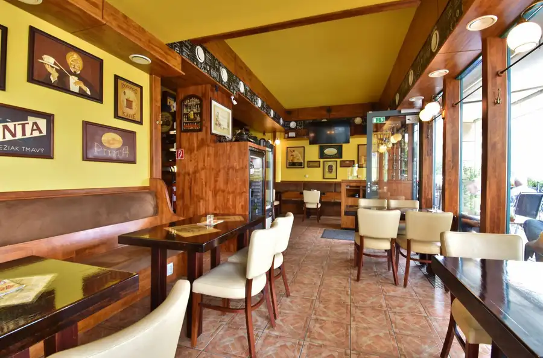
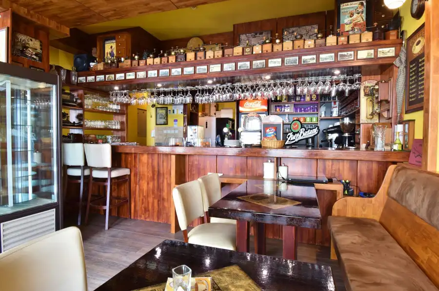
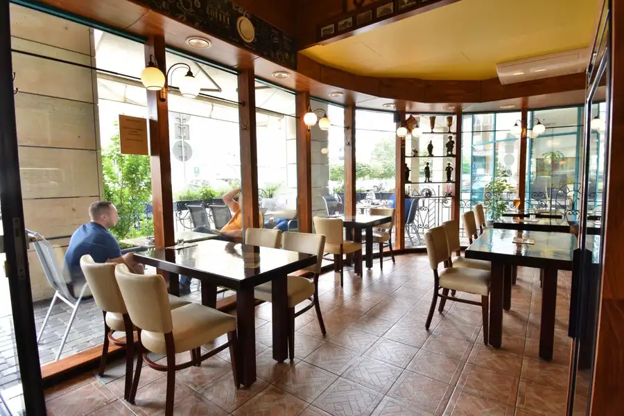
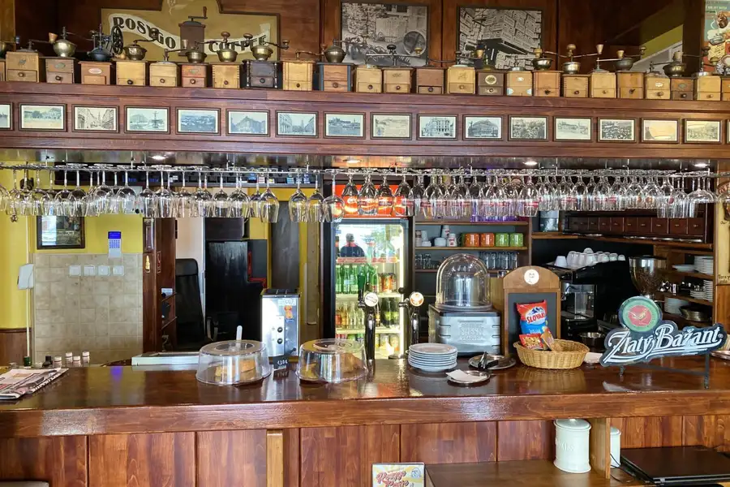
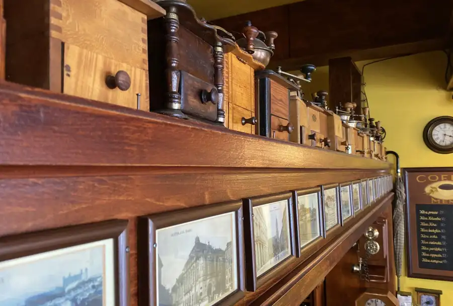
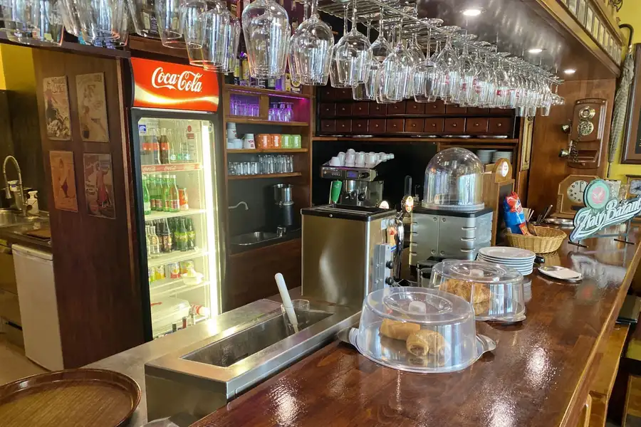
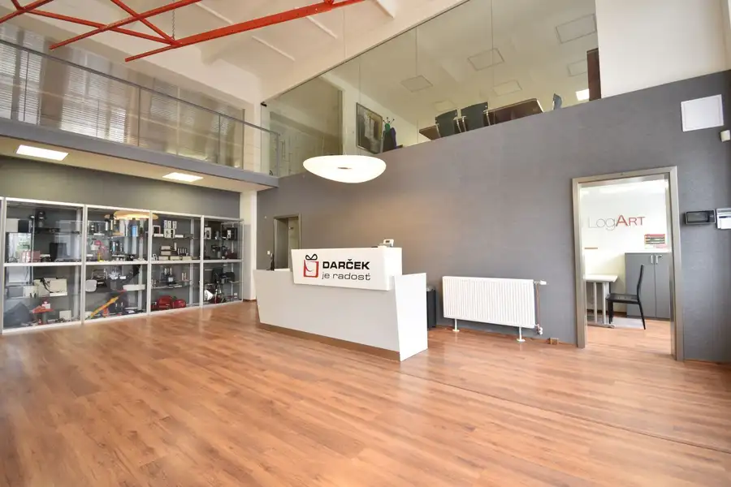
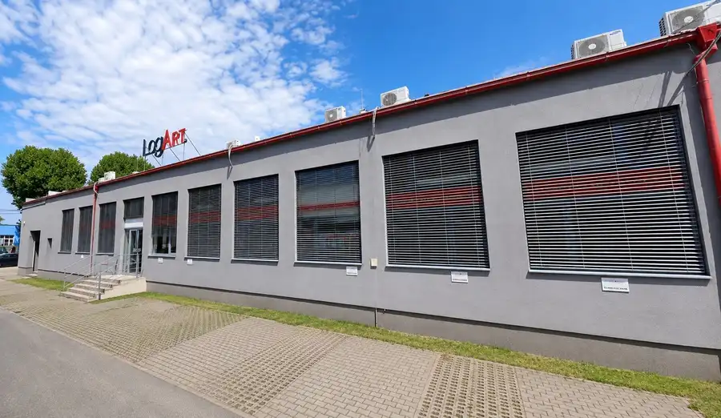
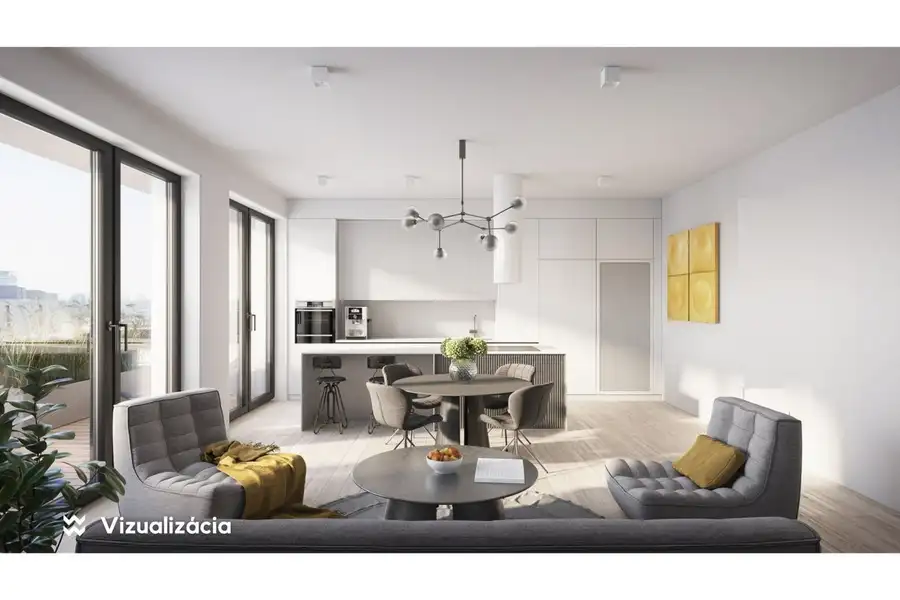

Prenájom kaviareň, kompletné zariadenie, budova ICT, Bratislava - Nové Mesto, Vajnorská ulica, pri OC Polus
Nové Mesto, Bratislava






- Plocha70 m²
- StavKompletná rekonštrukcia
- VlastníctvoOsobné
O nehnuteľnosti
WIN - WIN realitná kancelária ponúka exkluzívne na prenájom kaviareň s výkladom a možnosťou terasy v blízkosti OC Polus.• BA III - Nové Mesto, Vajnorská ulica, Bytový dom ICT• Kaviareň (s možnosťou studenej kuchyne)• Podlahová plocha: 70m2• Zvýšené stropy• Zabehnutá prevádzka ktorá fungovala 22 rokov• Kompletné profesionálne zariadenie a nábytok prevádzky na odstúpenie • Možnosť prenájmu terasy, so sedením pre 20 osôb.Dispozícia:• Vstup do kaviarne priamo oproti miestnemu úradu Bratislava - Nové Mesto, v tesnej blízkosti OC VIVO.• Priestranná miestnosť s barovým pultom a vybavením, barové zázemie, sklad, 2x sociálne zariadenie (M,Ž), letná terasa pred vchodom do kaviarne. • Sedenie v interiéri pre 24-30 osôbOrientačný pôdorys sa nachádza medzi fotografiami.Odstúpenie kompletného zariadenia potrebného na chod prevádzky:Kompletný nábytok, podsvietený barový pult so vzduchotechnikou pod pracovnou doskou, kamerový systém, alarm, 4K TV, klimatizácia, trojzónová vzduchotechnika, napojenie na veľkokapacitný zmäkčovač vody, šuflíková chladiaca skriňa s chladenou vaňou, chladničky na nápoje a dezerty, vínna chladnička, kávovar.Nad kaviarňou sa nachádzajú kancelárske priestory (nehrozí rušenie susedov), prevádzková doba od 6:00 do 24:00. Priestory sú kolaudované na účely kaviarne a prevádzka disponuje všetkými potrebnými legislatívnymi náležitosťami.Možnosť prenájmu jedného parkovacieho státia, pričom v okolí sú dostupné aj ďalšie platené parkovacie miesta v zóne NM2 s reguláciou parkovania v pracovných dňoch od 12:00 do 24:00 a v nedeľu od 18:00 do 24:00, za hodinovú sadzbu 1,00 €/hod.Lokalita:Projekt ICT vznikol v susedstve nákupného centra Polus a plavárne Pasienky v Bratislave, v lokalite s výborným dopravným napojením a občianskou vybavenosťou. Vďaka vnútornému átriu s terasami a detským ihriskom, pestrému mixu obchodných priestorov v parteri či dostatočným parkovacím kapacitám sa bytový dom roka 2001 dodnes teší veľkej obľube.Cena:1.500,- € /mesiac + energieOdstupné dohodouPre bližšie informácie ma neváhajte kontaktovať.Ing. Matej Vinš+421 908 744 452matej.vins@win-win.sk
Parametre
- Druh
- Reštauračné priestory
- Dátum zverejnenia
- 07. 04. 2026
- Energetický certifikát budovy
- nie je
- Energie
- 600
- Orientácia
- Severovýchodná
- Počet vonkajších parkovacích miest
- 1
- Rok výstavby
- 2001
- Stav nehnuteľnosti
- Kompletná rekonštrukcia
- Telekomunikácie
- Optická sieť
- Terás
- 1
- Typ
- Prenájom
- Typ konštrukcie
- Zmiešaná
- Vlastníctvo
- Osobné
- Vybavenie
- Terasa, Vonkajšie parkovacie miesto, Verejné parkovanie
- Vykurovanie
- Klimatizacia
- Úžitková plocha
- 70 m²
Kde to je


Mohlo by Vás zaujímať

Komerčné priestoryNové 2 540 €Prenájom reprezentatívny obchodno-kancelársky priestor, 254 m², Galvaniho ulica, Bratislava – Ružinov Ružinov, Bratislava 254 m²
Komerčné priestoryNové 2 540 €Prenájom reprezentatívny obchodno-kancelársky priestor, 254 m², Galvaniho ulica, Bratislava – Ružinov Ružinov, Bratislava 254.32 m²
BytNové 893 377 €Predaj jedinečný 4-izbový byt s terasou, 155 m², Novostavba (2025) Green Atrium, Parking v cene, Bratislava – Ružinov Ružinov, Bratislava 4-izbový155 m²9. podlažie